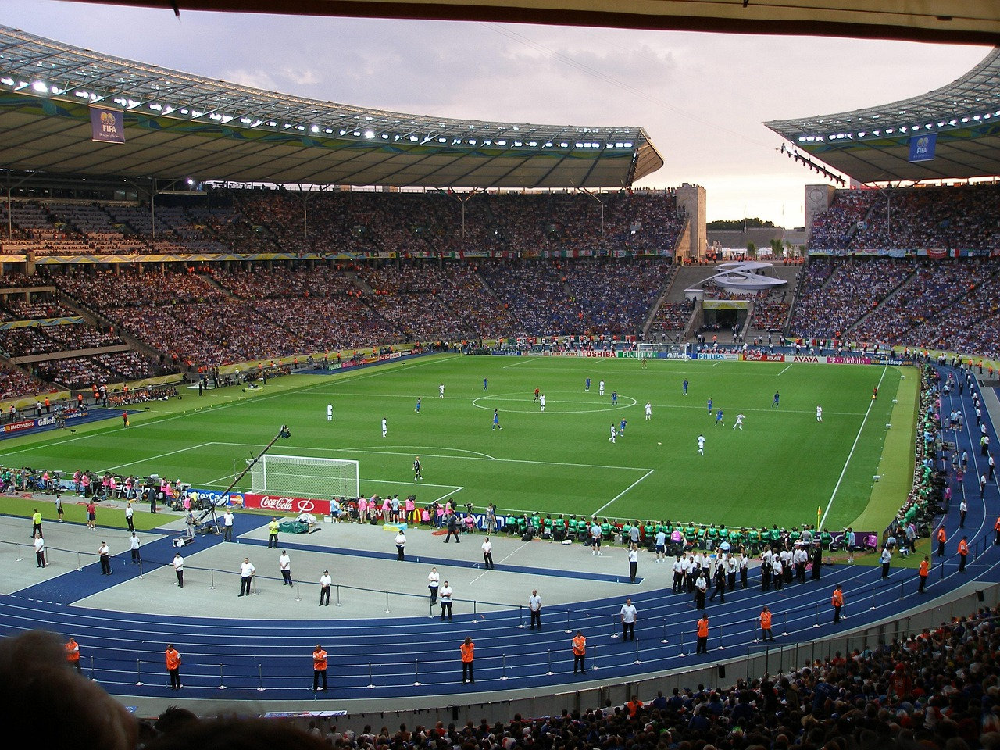

Coupe du Monde 2026 🏆
La Coupe du Monde est la compétition la plus prestigieuse du football. En 2026, elle se déroule dans 3 pays : Canada, Mexique et États-Unis.
Le Mondial 2026 est très attendu car il change de format : il y aura 48 équipes. Les qualifications se jouent dans chaque continent et les sélections se battent pour obtenir leur place. L’organisation s’appuie sur plusieurs stades et plusieurs villes, ce qui rend l’événement encore plus grand.
- Format : 48 équipes (nouvelle édition)
- Pays hôtes : Canada / Mexique / États-Unis
- Enjeux : préparation des équipes + stades + organisation
Les favoris de la Coupe du Monde 2026 sont la France et l’Espagne au vu de leurs effectifs complets et de leur qualité technique. Elles ont un bon mélange d’expérience et de jeunes talents, ce qui peut faire la différence sur un tournoi long. Je pense qu’elles peuvent aller très loin si elles restent régulières match après match.
